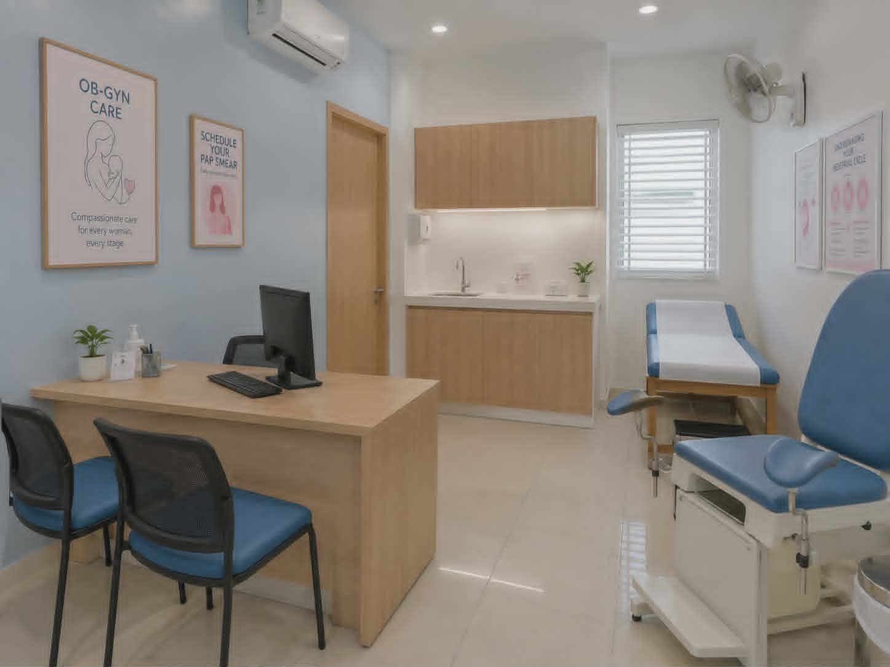
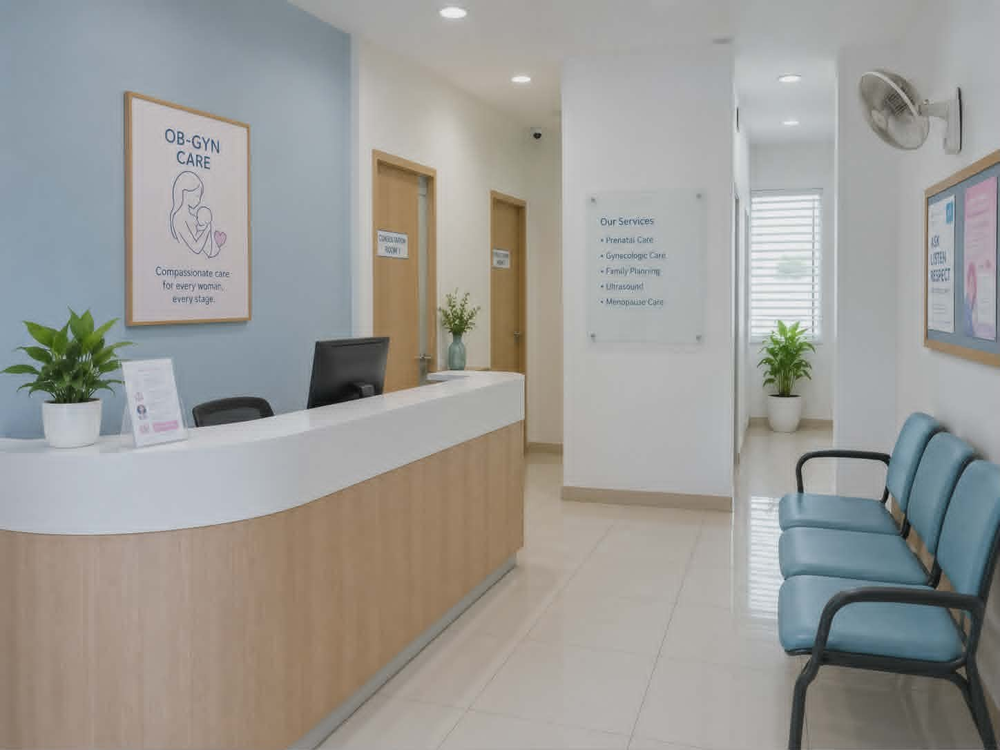
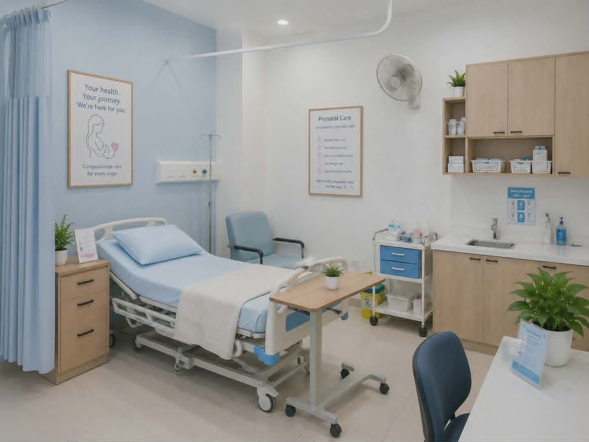
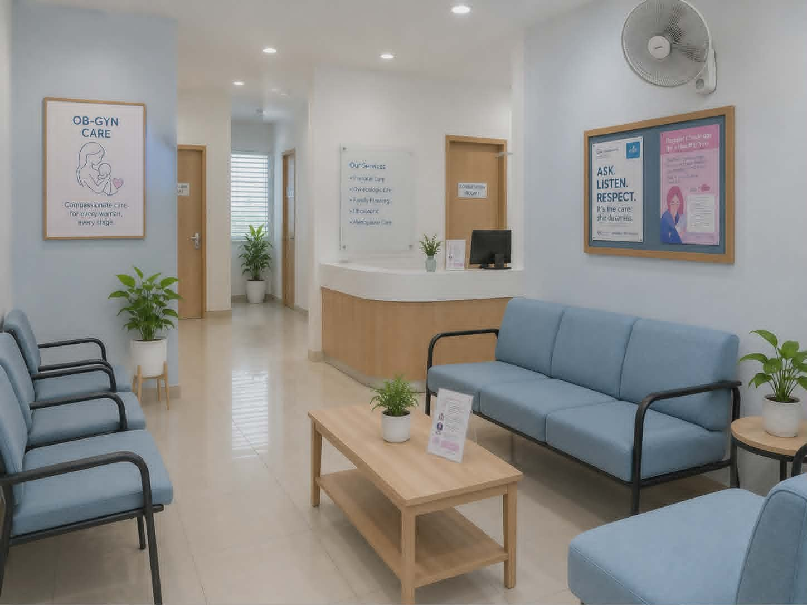
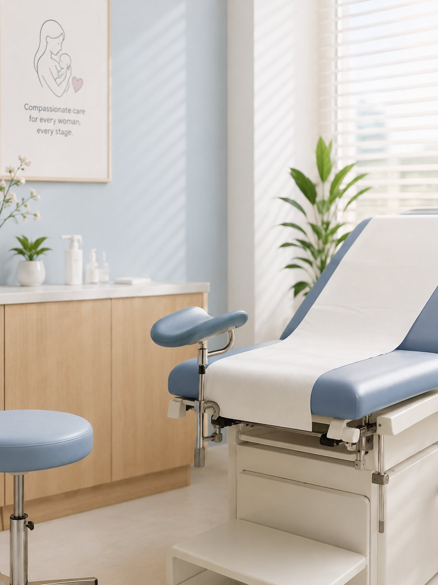

— Care that listens. Support that stays.
Compassionate OB-GYN Care for Every Stage of Womanhood
Personalized women’s health, pregnancy care, and consultation in a calm and respectful clinic setting.
✓ Licensed OB-GYN Care✓ Private Consultation✓ Patient-Centered Care
Private, respectful careA calm space to ask questions
Plan Your Visit with Confidence
Helpful clinic details for appointments, schedules, and patient inquiries.
— About LifeNest
Women’s Health Care with Comfort and Respect
LifeNest Women’s Clinic provides patient-centered support for women, mothers, and growing families.

LifeNest Women’s Clinic is a welcoming space for women seeking thoughtful medical guidance, pregnancy care, and gynecology support. We believe every patient deserves to feel heard, informed, and comfortable.
From routine consultation to prenatal and postpartum care, we protect your privacy and support your choices with professional, compassionate attention.
✓ Respectful, private consultations✓ Support through every life stage✓ Clear, patient-friendly guidance✓ Calm and comfortable environment
Meet your doctor →— Why LifeNest
Why Patients Choose LifeNest
A calm, private, and professional clinic experience focused on women’s health and pregnancy care.
Licensed OB-GYN Care
Professional consultation focused on women’s health, pregnancy concerns, and clear patient guidance.
Private & Respectful Consultations
A confidential setting where questions are handled with dignity and discretion.
Clean and Comfortable Clinic
A calm clinic environment planned around cleanliness and patient comfort.
Compassionate, Continuous Support
Considerate guidance from consultation through pregnancy and postpartum care.
— Women’s health services
OB-GYN Services Offered
Essential women’s health services delivered with care, clarity, and professionalism.
Obstetrics Consultation
Professional guidance for pregnancy questions, care planning, and maternal wellbeing.
Learn more →Pregnancy Checkups
Routine checkups that monitor maternal health and pregnancy progress with attentive guidance.
Learn more →Prenatal Care
Structured prenatal support and practical education appropriate to each pregnancy stage.
Learn more →Gynecology Consultation
Confidential assessment and clear guidance for women’s health concerns.
Learn more →Family Planning
Respectful, individualized information to support informed family planning decisions.
Learn more →Menstrual Concerns
Careful evaluation of irregular, painful, heavy, or concerning menstrual symptoms.
Learn more →Women’s Health Checkup
Preventive consultations and routine screening based on individual health needs.
Learn more →Postpartum Care
Follow-up support for recovery, wellbeing, and health concerns after childbirth.
Learn more →— Your specialist
Meet Your OB-GYN Specialist
Dedicated care from Dr. Maria Clara Delo Santos for women’s health and pregnancy concerns.
Dr. Maria Clara Delo Santos
OB-GYN Specialist
Dedicated to helping women feel confident and cared for, Dr. Maria Clara Delo Santos provides attentive consultations and evidence-informed care in a respectful, reassuring environment.
SpecialtyOB-GYN SpecialistCare focusWomen’s Health & Pregnancy CareExperience12+ Years of Women’s Health Care ExperienceClinic scheduleMonday–Saturday · Sunday by appointment
Schedule a Visit →— Patient experience
Patient Experience and Care Feedback
Sample feedback showing the kind of calm, respectful, and professional experience LifeNest aims to provide.
“The clinic felt calm and private. Dr. Maria Clara explained the next steps clearly and made me feel comfortable during my first consultation.”
“I appreciated the respectful approach and clear guidance. The appointment process felt organized and the clinic environment was clean.”
“The staff was welcoming and the consultation did not feel rushed. I felt supported and informed after the visit.”
Patient feedback samples are for website preview purposes.
— Visit planning
Clinic Schedule and Visit Hours
Plan your consultation ahead and confirm doctor availability before visiting.
✓ Private consultations✓ Confirmed appointment times
Request Appointment◷Weekly consultation hoursLifeNest Women’s ClinicOpen weekly
WeekdaysMonday to Friday9:00 AM – 5:00 PM
WeekendSaturday9:00 AM – 2:00 PM
SundayBy Appointment OnlyContact Clinic
iPlease contact the clinic to confirm doctor availability before visiting.
— Our clinic environment
A Calm and Comfortable Clinic Environment
Designed to provide a clean, private, and welcoming space for every patient visit.



— Appointment request
Request an Appointment
Send your preferred visit details and the clinic team will guide you through the next steps.

☎ +63 917 824 5631☎ +63 2 8456 2034✉ appointments@lifenestwomensclinic.com⌖ Suite 204, Aurora Medical Plaza
Quirino Highway, San Jose del Monte
Bulacan, Philippines
Quirino Highway, San Jose del Monte
Bulacan, Philippines
✓
Appointment request received!
Thank you. This is a preview confirmation; no information was sent or stored.
— Patient information
Common Questions Before Your Visit
Quick answers to help patients prepare for consultation.
Do I need an appointment?+
Appointments are recommended to help us prepare for your visit. Call +63 917 824 5631 or email appointments@lifenestwomensclinic.com.
Do you accept walk-ins?+
Walk-ins may be accepted depending on doctor availability. Please contact the clinic before visiting.
What services are available?+
We offer obstetrics, pregnancy and prenatal care, gynecology, family planning, checkups, and postpartum support.
What should I bring for consultation?+
Bring a valid ID, relevant medical records, medication details, and previous results.
Do you provide pregnancy checkups?+
Yes. We provide pregnancy checkups and prenatal care for mother and baby.
Where is the clinic located?+
Suite 204, Aurora Medical Plaza, Quirino Highway, San Jose del Monte, Bulacan, Philippines.